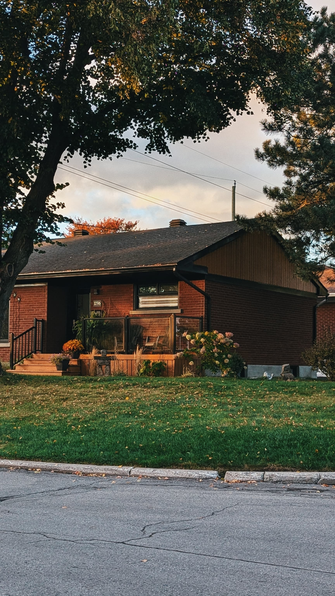
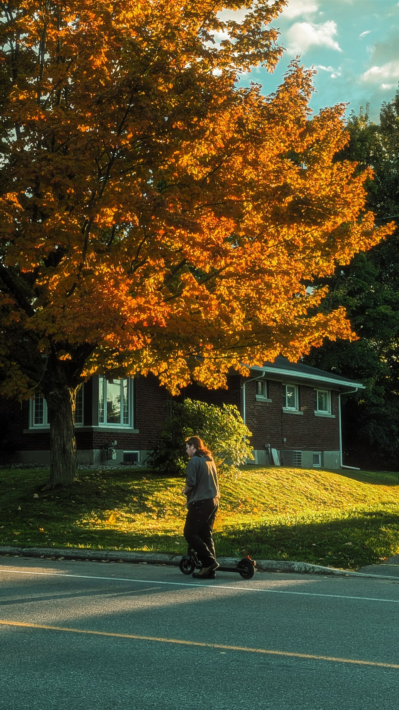
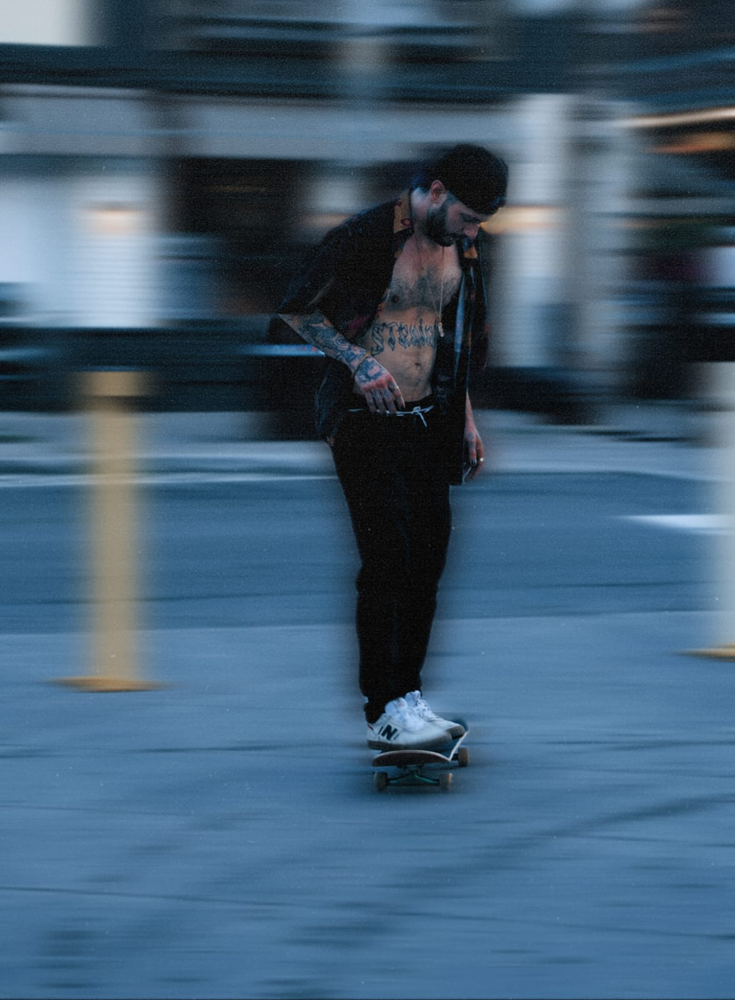
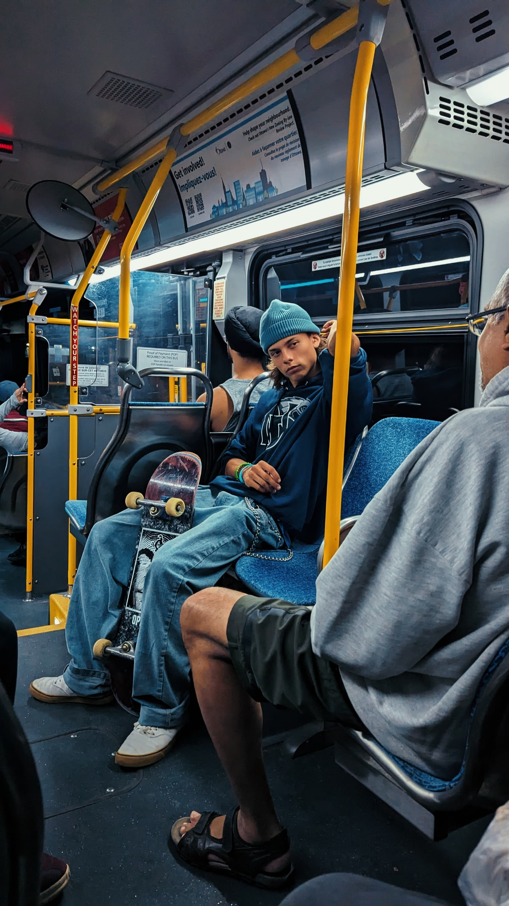
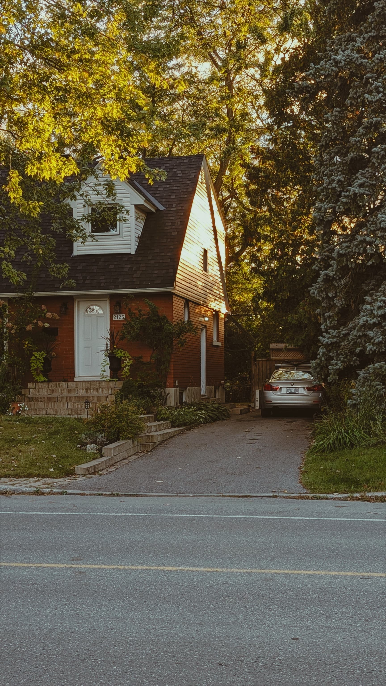

My Hobbies
- Travel
- Travelling - For me, Travelling is a way of finding myself out there. I'm a person who actually love to wander, write, take photos. I was deeply motivated by a quote, that goes by this "Humans and trees were created on planet earth and humans were gifted with legs instead of roots to travel the world."
- Taking Photos
- Photography - Taking Photos - I solely believe that life is temporary and ART is forever and as a passionate individual about Art, I make photographs, which according to me is the only way to freeze time or a moment.
- Photos I took
- These are some of the photos that I took after reaching Canada
Photo Gallery





- I'm a Cinephile
- I'm a person who finds inspiration in creating ART by watching Movies, Series and consuming visual media. I'm trying to overcome the language barriers and dive deep into the world of Cinemas